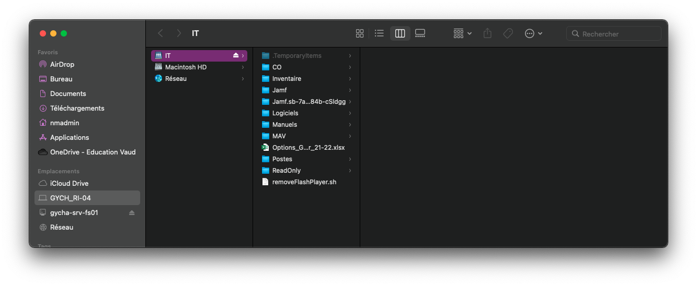

Mettre à jour l’inventaire
Contenu
Mettre à jour l’inventaire¶
Pour bien suivre et prendre une trace de changements au niveau des matériels informatiuques il faut toujours mettre à jour le fichier inventaire dans qui se trouve dans le serveur de fichiers.
Note
Actuellement (décembre 2021), le fichier inventaire le plus à jour est celui qui se trouve dans: Teams > GychaIT > Files > Inventaire > 2020
Accéder au serveur des fichiers¶
Pour commencer, ouvrez le Finder et dans les options Finder, choisissez “Aller” et ensuite “Se connecter au servuer”
{kind=link}
Dans la fenêtre suivante tappez l’adresse du serveur du fichier puis connecter. Adresse pour acceder au serveur des fichiers:
smb://gycha-srv-fs01
{kind=link}
Ensuite il vous demande de vous identifier sur le serveur, mettez votre identifiant AD ou Eduvaud puis connectez vous.
{kind=link}
Si authentification s’est faite sans erreur, une autre fenêtre s’ouvre avec une liste des volumes à disposition. Nous allons evidemment choisir IT.
{kind=link}
Voilà maintenant vous vous êtes bien connecter au serveur des fichiers et vous avez accès au tout les dossiers et documents inventaire.
{kind=link}
Changer nom d’un poste¶
Dans les cas où on veut changer le nom d’un pc ou laptop dans l’inventaire nous devons aussi le changer dans Active Directory. Cela prendre beacoup de temps si on le fesait à la main. Il existe un script Python qui met à jour AD par rappot aux changements dans le fichier inventaire et crée un fichier CSV dans dossier Readonly (il se trouve dans le dossier racine). Donc si on met à jour ce fichier inventaire et lancer le script, AD sera aussi à jour.
Emplacement du fichier inventaire à mettre à jour (dans serveur des fichiers):
/IT/inventaire/2021/InventaireNaming.xlsx
Lancer le script Python¶
Dans le même dossier se trouve le fichier script. Il s’appelle gycham_naming_export.py .
Pour lancer ce fichier nous aurons besoin du terminal. Dans terminal tappez python ensuite une espace, epuis glisser le script dans terminal.
{kind=link}
Maintenant il vous seulement tappez sur la touche “Enter” pour lancement script. Quand operation réussit, nous pouvons aller voir le fichier CSV que ce script à généré pour voir si le changement à été effectué sans erreur.
Emplacement du fichier CSV (dans serveur des fichiers):
/IT/ReadOnly/GYCH_naming.csv
Dans ce fichier vous pouvez chercher le pc dont vous venez de changer le nom.
Changement du nom sur le poste¶
Normalement les ordinateur au GYCHA lance recurremment la régle qui met à jour les information de l’ordinateur avec l’AD. Mais parfois vous avez besoin de changer son nom plus rapidement (par exemple dans les cas où nous faisons changement d’un ordinateur).
Il existe quatre différents règles dans Jamf qui nous permettent de mettre ajour le nom de l’ordinateur avec le fichier CSV qu’on a généré dans l’étap précédente.
renameComputer : met à jour le nom de l’ordinateur renamrComputerAD : il appelle la règle renameComputer en mettant à jour le même ordinateur dans l’AD renameComputerIN : il appelle la règle renameComputer en inserant l’ordinateur (qui n’était pas dans AD/Inventaire) dans Active Directory renameComputerOUT : contrairement la commande précédente, après lancement renameComputer, il sort l’ordinateur de l’AD (utilisé pour mettre en horsstock les ordinateurs)
Pour savoir comment lancer ces règles on peut référer à l’article “Déploiment OS depuis Jamf”, il y a un exemple de comment lancer une règle Jamf depuis terminal: